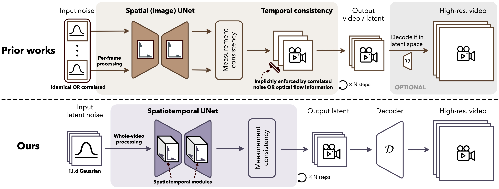

for Solving Video Inverse Problems
with Spatiotemporal Diffusion Priors
We consider an astronomical imaging problem where we recover videos of the rapidly evolving Sagittarius A* black hole from highly sparse interferometric measurements.
We also investigate a dynamic magnetic resonance imaging (MRI) problem in cardiology. The reconstructions are given by accelerated sequences that only take 27% of runtime of the original sequences.

Prior works for solving video inverse problems typically rely on image diffusion priors combined with heuristics to enforce temporal consistency. This is due to the common belief that training a video diffusion model is computationally prohibitive and requires a large amount of video data, which is usually unavailable for scientific problems. Therefore, they opt for using image diffusion priors on single frames and enforce temporal consistency by techniques such as equivariant self-guidance and batch-consistent sampling. These heuristics either rely on extracting optical flow from the measurements or assume a static temporal relationship between the frames. We find that these approaches are limited to image restoration tasks and struggle with faithfully recovering the underlying temporal relationships, particularly for tasks with high temporal uncertainty.
In this work, we propose a general and scalable framework for solving video inverse problems called STeP. We first show that it is feasible to train a spatiotemporal diffusion prior by fine-tuning latent video diffusion models from pretrained image diffusion models using limited videos in specific domains. This allows us to leverage the power of video diffusion models without the need for extensive computational resources or large datasets. By combining the prior with the physical knowledge of the inverse problem in a plug-and-play video inverse problem solver, we can effectively solve video inverse problems in a scalable and data-efficient manner. Our framework is designed to be general and scalable, making it applicable to a wide range of video inverse problems. We demonstrate the effectiveness of our approach by applying it to two challenging scientific video inverse problems: black hole video reconstruction and dynamic MRI. Our results show that our framework enables the generation of diverse, high-fidelity video reconstructions that not only fit observations but also recover multi-modal solutions.
If you find our work interesting, please consider citing our paper:
@misc{zhang2025stepgeneralscalableframework, title={STeP: A General and Scalable Framework for Solving Video Inverse Problems with Spatiotemporal Diffusion Priors}, author={Bingliang Zhang and Zihui Wu and Berthy T. Feng and Yang Song and Yisong Yue and Katherine L. Bouman}, year={2025}, eprint={2504.07549}, archivePrefix={arXiv}, primaryClass={cs.CV}, url={https://arxiv.org/abs/2504.07549}, }